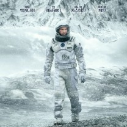
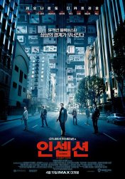
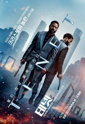

| 순위 | 제목 | 포스터 | 줄거리 | 바로가기 |
| 1 | 인터스텔라 |  | 세계 각국의 정부와 경제가 완전히 붕괴된 미래가 다가온다. 지난 20세기에 범한 잘못이 전 세계적인 식량 부족을 불러왔고, NASA도 해체되었다. 이때 시공간에 불가사의한 틈이 열리고, 남은 자들에게는 이 곳을 탐험해 인류를 구해야 하는 임무가 지워진다. 사랑하는 가족들을 뒤로 한 채 인류라는 더 큰 가족을 위해, 그들은 이제 희망을 찾아 우주로 간다. 그리고 우린 답을 찾을 것이다. 늘 그랬듯이… | 클릭 |
| 2 | 인셉션 |  | 주인공 코브는 패시브(PASIV DEVICE)라는 기계를 이용해 다른 사람과 꿈을 공유하고 그 꿈 속에서 타인의 비밀을 추출(Extraction)해내는 추출가라는 직업을 가지고 있다. 해변에서 발견된 코브를 일본인 경비원들이 발견해 일본풍 고성으로 데려가며 영화가 시작된다. 그리고 코브는 한 일본인 노인과 대면하게 되고, 노인은 코브의 소지품 중 팽이를 만져보면서 "이 팽이, 본 적 있어. 반쯤 잊혀진 꿈(Half Remembered Dream)에서."라고 말한다. | 클릭 |
| 3 | 테넷 |  | 시간의 흐름을 뒤집는 인버전을 통해 현재와 미래를 오가며 세상을 파괴하려는 사토르(케네스 브래너)를 막기 위해 투입된 작전의 주도자(존 데이비드 워싱턴). 인버전에 대한 정보를 가진 닐(로버트 패틴슨)과 미술품 감정사이자 사토르에 대한 복수심이 가득한 그의 아내 캣(엘리자베스 데비키)과 협력해 미래의 공격에 맞서 제3차 세계대전을 막아야 한다! | 클릭 |
| 4 | 내부자들 | “복수극으로 가자고, 화끈하게” 유력한 대통령 후보와 재벌 회장, 그들을 돕는 정치깡패 안상구(이병헌). 뒷거래의 판을 짠 이는 대한민국 여론을 움직이는 유명 논설주간 이강희(백윤식)다. 더 큰 성공을 원한 안상구는 이들의 비자금 파일로 거래를 준비하다 발각되고, 이 일로 폐인이 되어 버려진다. “넌 복수를 원하고, 난 정의를 원한다. 그림 좋잖아?” 빽 없고 족보가 없어 늘 승진을 눈 앞에 두고 주저 앉는 검사 우장훈(조승우). 마침내 대선을 앞둔 대대적인 비자금 조사의 저격수가 되는 기회를 잡는다. 그러나 비자금 파일을 가로챈 안상구 때문에 수사는 종결되고, 우장훈은 책임을 떠안고 좌천된다. 자신을 폐인으로 만든 일당에게 복수를 계획하는 정치깡패 안상구 비자금 파일과 안상구라는 존재를 이용해 성공하고 싶은 무족보 검사 우장훈 그리고 비자금 스캔들을 덮어야 하는 대통령 후보와 재벌, 그들의 설계자 이강희 과연 살아남는 자는 누가 될 것인가? | 클릭 | |
| 5 | 라라랜드 | 꿈을 꾸는 사람들을 위한 별들의 도시 ‘라라랜드’. 재즈 피아니스트 ‘세바스찬’(라이언 고슬링)과 배우 지망생 ‘미아’(엠마 스톤), 인생에서 가장 빛나는 순간 만난 두 사람은 미완성인 서로의 무대를 만들어가기 시작한다. | 클릭 |
본인 취향 영화